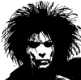
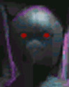
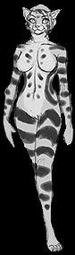

Jmeno: Vlado Hromada

elctricbuddha,vlad3, Vadan Dragosani, Peter Goatman
mu¾, 23 let, tì¾ká alergie na zlato a jeho slouèeniny: +3cè. (+3 k atr.)
karma: 4 (11), pocitadlo: 0 (5), teamova [Jasmina]: 5, €: 85.000
atributy
tìlo: 3
síla: 2
rychlost: 5
inteligence: 6
síla vùle: 6
charisma: 2
reakce: 5(11)
iniciativa: 5+1k6 (matrix: 11+5k6)
bojové rezervy: 8
matrixové rezervy: 18
esence: 1.4
dovednosti
poèítaèe-deckování:(5)7
elektronika: 6
poèítaèová teorie: 6
støelba: 4 -> samopaly: 5 -> uzi: 9
motorka: 6
software -> matrixové programování: 1
cyberware
(korové bomby - nezji¹tìné, ale vìøí, ¾e je má)
telefon 0,5 [jen pro pøípad nouze]
chipjack: 0,2
datajack: 0,2
data-programové spojení 0,1
zobrazovací spojení 0,1
datový filtr 0,3
datový zámek 0,2
300mp pamìti 3,0
výbava
v kufru u decku:
5x datové èerpadlo: 6
5x snímaè datových linek: 6
kodér signálu: 6
dekodér signálu: 6
batù¾ek:
mikrotechnická dílna velikosti kuføíku
6 metrù monovlákna (spevnìná optika)
spacák s GoreTex@2065&trade
kapsy kombinézy a kalhot:
hlasový modulátor: 6
magnetický paklíè: 6
mini baterka
mikroporová lepící páska [èerná]
SM ko¾ená maska s otvorem na oèi a zipem na ústech
Bøitva [nebo v rukávu civilního obleèení]
mikro vysílaèka a zesilovaè, cryptookruh: 6
èipy (celkem 280mp, nahráno vìt¹inou v hwpamìti)
- jazyky: nìmèina, ru¹tina, angliètina, ¹panìl¹tina, ital¹tina, pol¹tina: 6
- vìdomosti: vojenská mapa Evropy s plány mìst: 3
smlouva DocWagon(a kooperující Evropský servis): platinová
hedsetový telefon
Uzi III - ut:5(7), 24(z),D,6M(9V),in.smartgun,(zvukový filtr)
(ve speciálním ohnivzdorném kuføíku (rychlovyhazovací), pod sedadlem motorky zároveò s deckem)
Remington 950 vz. 1921 (.223)
2x 24 ran obyè. munice (z)
2x 24 ran výbu¹né (z)
Èerný de¹tník (kord: 2L, Ut.8 [jako nù¾] nebo rákoska: 4M[omráè.], ut.8)
Ducati 1000 GS - v bílé barvì
ovl:3, rych:65/195, plá¹»:1, pancíø:0, sign:1, pilot:1
Ian, Langusta, Polozmrd, Sedrick, Dimitri i sam Vlad maji v obleceni sledovaci spendlik, ktery je vydet na 5km daleko (crypto: 8)
Fuchi Cyber-4

Zaroven s Jasminou Nova
HARDWARE:
persona: 6
odolnost: 3
ram: 500
hdd: 1500
náklad: 20
IO: 20
PERSONA:
lid(tìlo): 6
únik: 6
maskování: 6
sensory: 6
(specialita decku, reflexy: 3)
PROGRAMY:
útok: 4
medik(poè.úsp.=vyléè.ètverce)(144mp-degen.): 6
klon(poè.úsp.=kryté.ètverce)(108mp-degen): 6
proèítání(hledá v datech)(36mp): 6
de¹ifrování(108mp): 6
analíza(info o uzlu)(108mp): 6
maskovací únikový teleport(72mp): 6
maskování(pøi vstupu do uzlu)(108mp): 6
obleèení
na motorku:
pancéøová vesta (moto-kombinéza-bunda a kalhoty - spousta kompaktních kapes)[5/3] + chránièe kloubù a rukavice [5/4] + bílá helma s vysílaèkou [5/5] + vyztu¾ený batù¾ek [30litrù] + odepínatelné pásy odrazek
(2x): obyèejné hadry [batù¾ek] - osobní pancíø [4/1], èerné úzké jeansy, sametové 3/4 sáèko(nebo kabát), bílá ko¹ile se zvonovými rukávy (gotic punk style), èerné marteny, støíbrný prsten (krou¾ek), èerný klobouk nebo baret
brýle-prùhledné lenonky bez obrouèek: termo, infra, smarlink, dalekohled: 3
vizá¾
Obrýlený, vysoký hubený, èerné rozèepýøené vlasy, v¾dy chodí v èerné a bílé ve stylu
gotic punku, na prstì nosí støíbrnou obrouèku a na krku støíbrný køí¾ ankh.
Kdy¾ pracuje a jezdí na motorce, pou¾ívá èernou neprùstøelnou a nárazuvzdornou kombinézu, bílou helmu s èerným hledím a speciální pouzdro na uzi a kyberdeck. Pouzdro je nárazu- a ohnivzdorné, má tvar pøibli¾nì jako notebook, pøesnì pasuje pod sedadlo motorky. Zbraò
je v podsatì souèástí kuføíku, ale v pøípadì jejího pou¾ití, je mo¾né ji rychle
vyhodit (kuføík spadne na zem a zbraò zùstane u¾ivateli v ruce).
¾ivotní úroveò
hrobka Jiøího Karáska(mrtvá schránka)na Ol¹anech: squat: koupená
hrobka rodiny Petrù (dílna a sklad) v Olomouci: squat: koupená
London: Bordel u Mareny v neckach: vysoká úroveò - schovaný FuchiCyber-7

kontakty
Timmy Robocop a pes Packa - osobní kontakty
dohazovaèka - kontakt pomocí netu a tajné schránky
mikrotechièka-elfka - kontakt pomocí netu a tajné schránky
Ko»átko a její team
trol Trol - ruský parazvíøatolog
Invisible Galery web Node
Archibald - trpaslík, dohazovaè - zbranì a výbava, London
Maxim Oblukov - mikrotechnická dílna v Rusku (i cyberdecky), 2-3 hodiny
letadlem odkudkoli z Evropy
Derek - byvaly Timmyho sluha, vyhorely kouzelnik
IAAN2 - jenda, rigger, safehouse v Samotiskach
eBony Clide - dohazoval zachranu Slotrhauze v Edinburgu
Dimitrij - Elf
Langusta - Prawitz
Slotrhauz - Sorbak
pozadí
narodil se v Bratislavì -- nìjaký èas dìlal bez vìdomí rodièù datového nosièe
-- strana zatknula jeho zamìstnavatele a rodièe -- ú»ìk do Washingtonu DC -- dostal práci od Timmyho, ale hacknul datový zámek a data prodal Finovi(Timmyho kámo¹) -- pracuje pro Timmyho jako decker za byt stravu a deck v DC -- cesta do Evropy se zamìstnavatelem, pod zmìnìnou identitou (ne vizá¾í), jako Vladan Dragosani, datový kurír priority A z Balkánu
22/09/04 02:56:31